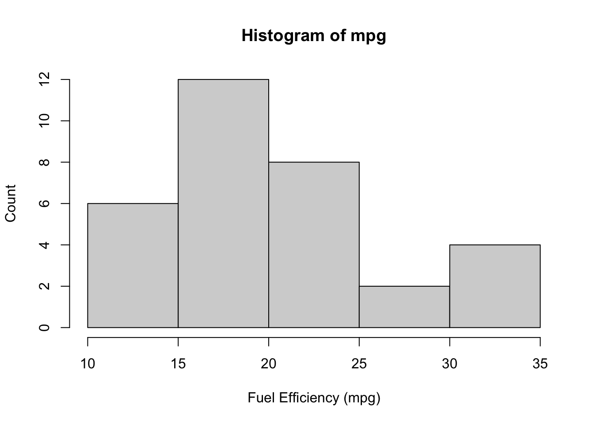
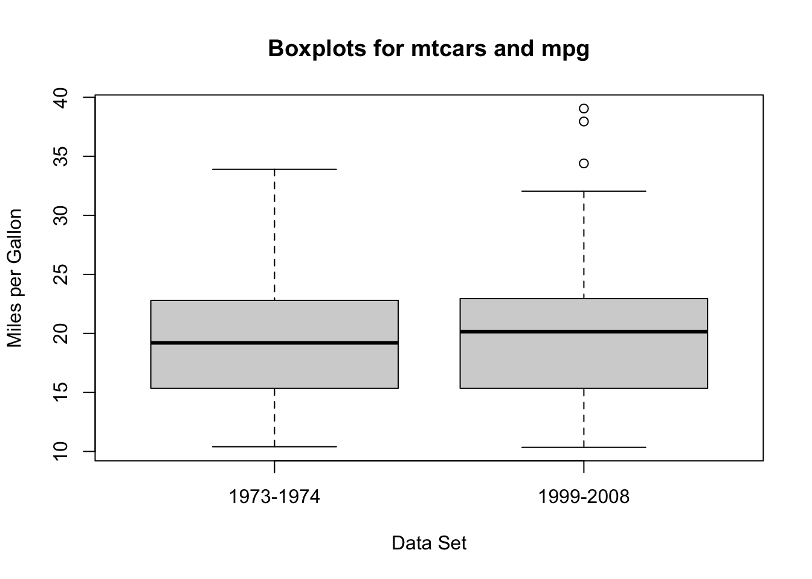
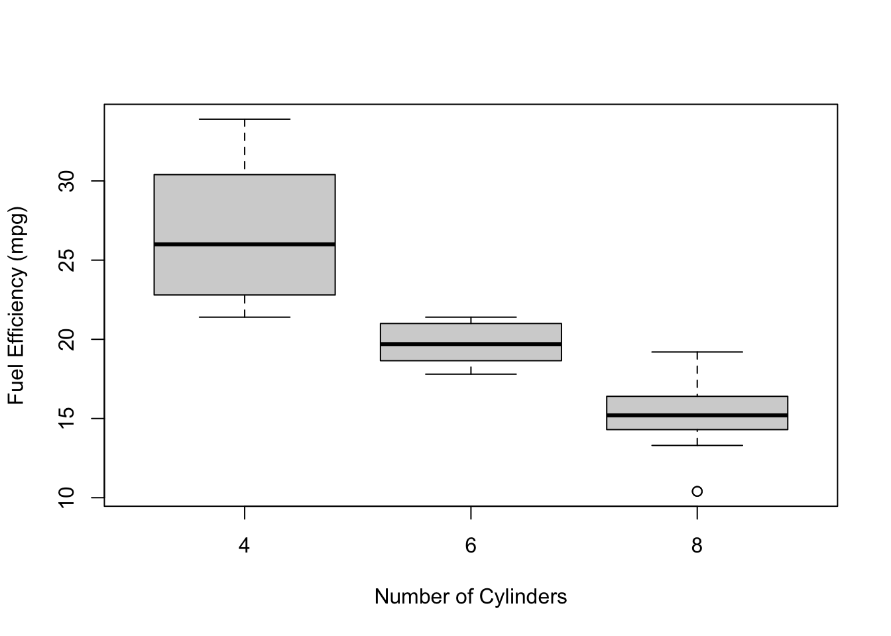
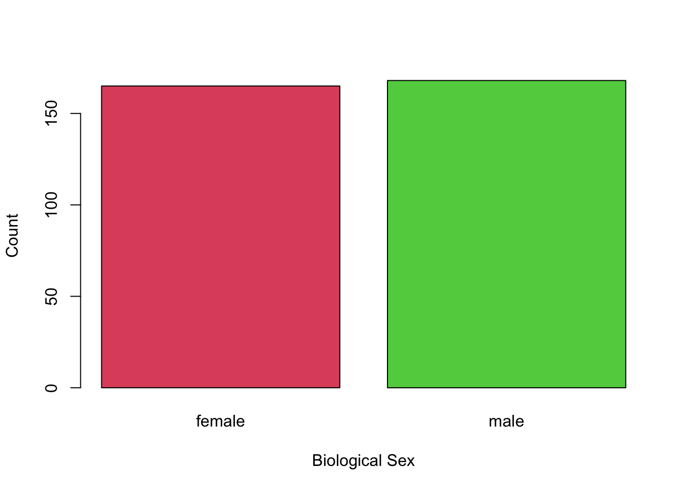
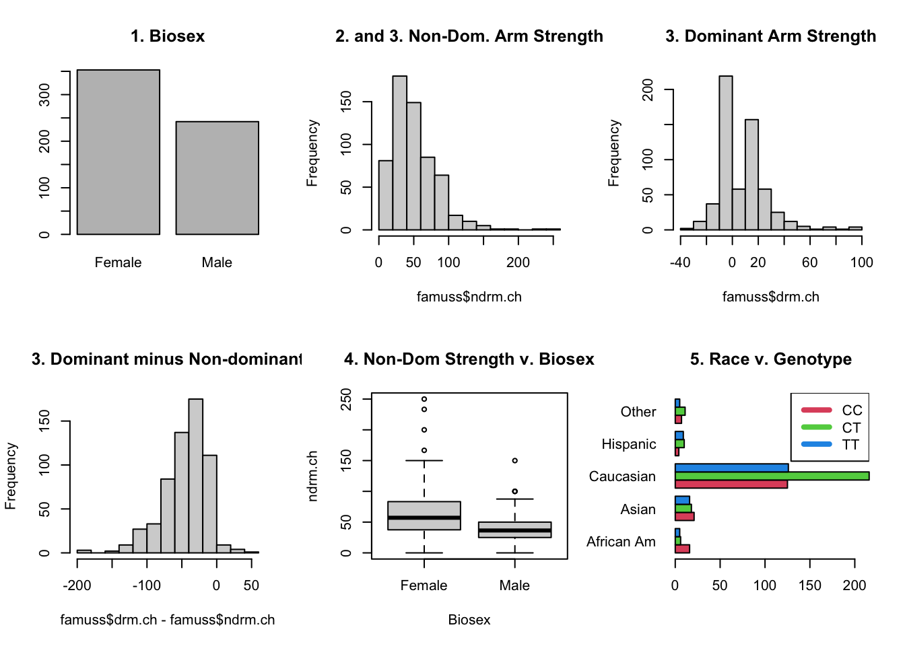

21 Post-Midterm Review
21.1 The Broad Topics
The following topics have applied to almost everything since the midterm.
Standard Errors
- Since our sample was random, we could have gotten different data. With different data, we’d get a different mean and sd.
- The standard error of the mean represents uncertainty around the mean. With more data, we are more certain about the value.
- Effects of outliers diminish, and the overall variation “averages out”.
- The same thing happens to the sd, but it’s not a normal distribution.
- Be ready to explain how standard errors relate to various concepts.
- For example, could you explain why test statistics and p-values have a standard error (even though you don’t know the formula for it)?
Assumption Checking
- All of the methods we use require assumptions about the population.
- There’s always some sort of independence assumption, which can be satisfied by having a good sampling strategy.
- There’s usually either an assumption of normality, or some conditions for which the normal approximation applies.
- For means, we need a big enough sample for the Central Limit Theorem to apply (\(n > 30\) or \(n>60\) or something like that). This applies to all of the groups for t-tests and ANOVA.
- For proportions, we need some form of \(np>10\) and \(n(1-p)>10\) so that the normal approximation applies. Be careful whether you need the observed proportion, hypothesized proportion, or pooled proportion!
- For regression, we assume that the residuals are normal, and we can assess this with the QQ Plot.
- There are other assumptions that may be method-specific.
- For example, linear regression requires that the plot looks linear!
- On the exam, there will be questions that ask you to interpret the results of a study. You must check the assumptions before making a conclusion, regardless of whether you’re explicitly told to!
- In a job, your boss might just ask for the results, but they’ll expect you to make sure the results are valid before sharing them!
Hypothesis Testing
- Null and Alternative hypotheses: Convert the word problem into math.
- Null: Nothing is going on. Very often, this means \(\mu = 0\) or \(p = 0.5\) or \(\mu_1 - \mu_0 = 0\). However, we could also test things like \(p_1 - p_2 = 0.1\), i.e., whether \(p_1\) is 10 percentage points higher than \(p_2\).
- Alternative: generally involves a \(\ne\), \(>\), or \(<\). The wording of the statement will indicate whether it’s a two sided (\(\ne\)), right-tailed (\(>\)), or left-tailed (\(<\)) p-value.
- Set the significance level.
- This determines how “strong” the evidence must be in order for us to reject the null. \(\alpha = 0.1\) means we’ll accept weak evidence, whereas \(\alpha = 0.001\) means we need to be very sure of our results before the null is rejected.
- Test statistic: measures the distance between our observed data and the hypothesized value, relative to the standard error.
- Relies on the value from the null hypothesis, as well as the sample size!
- p-value: ASSUMING THE NULL HYPOTHESIS IS TRUE, the p-value measures the probability of getting data at least as extreme as the data we got.
- “At least as extreme” = this far away from the null values or further. The direction is determined by the alternative hypothesis.
- A small p-value is strong evidence. If \(p < \alpha\), we reject the null and claim that our result is “statistically significant”.
- A small p-value does not mean that there’s a large difference in the observed and hypothesized! It’s a large difference relative to the standard error, which decreases with better study designs and larger sample sizes. For example, a 0.01% increase in cancer risk is not something that a person really needs to worry about, but a large enough sample might find a statistically significant result!
Confidence Intervals
- If we were to repeat the exact same study many, many times with new samples each time, \((1-\alpha)\)% of the intervals we create will contain the true population parameter.
- Generally, a CI has the form “point estimate \(\pm\) critical value * standard error”
- Point estimate: the mean, for example.
- Critical value: the value from the relevant distribution that makes it a \((1-\alpha)\)% interval. Essentially, this controls the width of the interval so that the interval actually does contain the true parameter as often as we claim that it does.
- Standard error: see above.
- A 95% CI is essentially the middle 95% of the sampling distribution, if it were centered on the observed sample mean.
- In other words, we use the standard error to determine an interval that we hope covers the middle 95% of all possible mean values.
- For a 95% CI, we want the middle 95%. This means we want 2.5% on either side, which is why we see \(\alpha/2\) a lot when dealing with confidence intervals.
Conclusion in the context of the problem
The beauty of stats is that it’s rigorous math with applications to the real world - always remember that the data come from somewhere and the results might be meaningful to real people!
Type 1 and 2 Error
- Type 1 Error: rejecting a null when it’s true.
- We reject if \(p < \alpha\) because our p-value is “too unlikely” under the null. However, unlikely things still happen!
- If \(\alpha=0.05\), then we reject anything with a p-value less than 5%. However, things with a p-value of 5% still happen 5% of the time.
- P(Type 1 Error) = \(\alpha\).
- In other words, we control P(Type 1 Error) when we choose a significance level.
- Type 2 Error: Fail to reject the null when it’s false
- Even when the null is actually false, we may not have strong enough evidence to reject it.
- Better evidence comes from either a better study design or a larger sample size.
- Power: 1 - P(Type 2 Error), which is generally difficult to calculate.
- It is not \(1-\alpha\).
- A study with low power might have p-values larger than \(\alpha\), but the authors would not be able to say whether the null is false.
- Even when the null is actually false, we may not have strong enough evidence to reject it.
Multiple Comparisons Problem
- Suppose the null is true. We still have a 5% chance of rejecting a true null, and therefore a 95% chance of correctly not rejecting it.
- If we have two nulls, both of which are true, then the probability that we correctly don’t reject either is 0.95*0.95 = 0.9025. This means we have a 9.75% chance of rejecting at least one of them, even though they’re both true.
- The multiple comparisons problem states that, when we check a lot of p-values, the Type 1 Error increases.
21.2 Means
One-sample t-tests and CIs for a Mean
- Assumptions: The population is normal, or that the sample is large enough for the CLT to apply. Independence among observations.
- Null Hypothesis: \(H_0:\mu = \mu_0\), where \(\mu_0\) is the hypothesized value given in the question.
- Test Statistic: \(t_{obs} = \dfrac{\bar x - \mu_0}{s/\sqrt{n}}\)
- p-value:
- pt(\(t_{obs}\)) for left-tailed (\(<\))
- 1 - pt(\(t_{obs}\)) for right-tailed (\(>\))
- 2*(1 - pt(|\(t_{obs}\)|)) for two-tailed (\(\ne\))
- CI: \(\bar x \pm t_{n-1}^*\dfrac{s}{\sqrt{n}}\)
- For a \((1-\alpha)\)% interval, \(t^*_{n-1}\) comes from
qt(alpha/2)- E.g., for a 95% CI, \(\alpha = 0.05\) and we would use
qt(0.025). - This could also be written as
qt((1 - 0.95)/2).
- E.g., for a 95% CI, \(\alpha = 0.05\) and we would use
- For a \((1-\alpha)\)% interval, \(t^*_{n-1}\) comes from
Example: The EPA claims that the average fuel mileage of cars is 19 mpg. Does the mtcars data set support this claim?
A small difference from 19 would not be important to us, so we’re only going to reject this claim if there is strong evidence. For this reason, we’ll use a significance level of 0.01.
The plot below does not quite look normal, but for this size sample it is potentially normal “enough”.
The question asks whether our data support the claim, but does not ask if the true mpg is larger than or less than. We use a two-sided hypothesis test.
\[ H_0: \mu = 19\text{ vs. }H_A:\mu \ne 19 \]
We’ll let R do the calculations for us.
t.test(mtcars$mpg, mu = 19,
alternative = "two.sided")
One Sample t-test
data: mtcars$mpg
t = 1.0237, df = 31, p-value = 0.3139
alternative hypothesis: true mean is not equal to 19
95 percent confidence interval:
17.91768 22.26357
sample estimates:
mean of x
20.09062 Our p-value is 0.31, which is much larger than our significance level of 0.05. We conclude that we cannot reject the EPA’s claim.1
Second Example
The ggplot2 package also loads in a data set called mpg, do these data agree with our previous conclusion?
# A tibble: 6 × 11
manufacturer model displ year cyl trans drv cty hwy fl class
<chr> <chr> <dbl> <int> <int> <chr> <chr> <int> <int> <chr> <chr>
1 audi a4 1.8 1999 4 auto(l5) f 18 29 p compa…
2 audi a4 1.8 1999 4 manual(m5) f 21 29 p compa…
3 audi a4 2 2008 4 manual(m6) f 20 31 p compa…
4 audi a4 2 2008 4 auto(av) f 21 30 p compa…
5 audi a4 2.8 1999 6 auto(l5) f 16 26 p compa…
6 audi a4 2.8 1999 6 manual(m5) f 18 26 p compa…t.test(mpg$overall, mu = 19)
One Sample t-test
data: mpg$overall
t = 2.528, df = 233, p-value = 0.01213
alternative hypothesis: true mean is not equal to 19
95 percent confidence interval:
19.18104 20.45998
sample estimates:
mean of x
19.82051 The p-value for this test is 0.012, which is above our significance level of 0.01. However, it’s only slightly above!
If these are two well-collected samples from the population, then there’s a \(1 - (1 - 0.01)^2 = 0.0199\approx 2\%\) chance of at least one of them being significant by chance.
As mentioned in class, the mtcars data set is from 1973. This data set is from 1999-2008, so they’re not exactly separate samples from the same population!
Matched Pairs t-test for a Mean Difference
A matched pairs study design is one where each subject is matched with another, only one of which gets the treatment and the other gets the control. See the oitment example from the class.
A matched pairs test is actually just a one-sample t-test for the differences. In other words, we treat each difference as if it’s the value we’re calculating. The one-sample t-test assumptions and conclusions apply.
Two-Sample t-tests
- Assumptions: Both populations are normal, or both the samples are large enough for the CLT to apply. Independence among observations within and between groups.2
- Null Hypothesis: Generally, we have the null hypothesis \(H_0:\mu_{diff} = 0\), where \(\mu_{diff}\) is the difference in the means (either \(\mu-1 - \mu_2\) or \(\mu_2 - \mu_1\)3).
- Test Statistic: \(t_{obs} = \dfrac{\bar x_1 - \bar x_2}{SE}\)
- \(SE\) comes from the square root of the sum of their variances.
- \(SE = \sqrt{\frac{s_1^2}{n_1} + \frac{2_s^2}{n_2}}\)
- \(SE\) comes from the square root of the sum of their variances.
- p-value: Same as 1-sample, where we use a \(t\)-distirbution.
- CI: \(\bar x1 - \bar x_2 \pm t_{n-1}^*SE\)
Example: In the 1-sample procedure, I included a second example using a different sample of cars. The first example used a dataset called mtcars, which measured a sample of cars from 1973-1974, while the second used a data set called mpg which measures a sample of cars from 1999-2008. In this example, let’s test whether the fuel efficiency of cars has improved (i.e., the mpg has gone up).4
In symbols, our hypotheses are \(H_0:\mu_{mtcars} - \mu_{mpg} = 0\) versus \(H_A: \mu_{diff} < 0\).5

From these two plots, it looks like there is a possible slight difference.
- We are assuming that both data sets are based on good samples, although this may not actually be appropriate and we should acknowledge this in our conclusions.
- It is clear that there is not dependence between these two data sets - they were collected completely separately!
t.test(mtcars$mpg, mpg$overall, alternative = "less")
Welch Two Sample t-test
data: mtcars$mpg and mpg$overall
t = 0.24252, df = 36.979, p-value = 0.5951
alternative hypothesis: true difference in means is less than 0
95 percent confidence interval:
-Inf 2.149167
sample estimates:
mean of x mean of y
20.09062 19.82051 It looks like there is not a significant difference.
I’m always a little bit skeptical when something is doing calculations for me, so I just want to double check whether R is doing mtcars minus mpg or the other way around.
mean(mtcars$mpg); mean(mpg$overall)[1] 20.09062[1] 19.82051So it looks like R is labelling “x” as mtcars and “y” as mpg, and doing mtcars minus mpg. This means that we’re correct in using “alernative = "less".
Now that we’ve double checked that the calculations were correct, we can make our conclusion. It does not appear that the two data sets have significantly different fuel efficiencies. However, this conclusion is highly sensitive to whether the data sets have “good” sampling strategies.
The mtcars data were sample by Motor Trend Magazine based on what they thought their audience would like, whereas the mpg data were taken from the Environmental Protection Agency without any preference. It is very important to note that neither data set represents the average mpg of cars on the road. For instance, the mpg data contain one row for the manual Chevrolet Corvette and one row for the automatic Corvette, as well as one for the Honda Civic (automatic and manual). This is not representative of cars in general, as well as not representative of the actual cars on the road.
ANOVA for Multiple Means
- Assumptions: The population is normal, or that the sample is large enough for the CLT to apply. Independence among observations. Independence between groups. Groups have the same variance.
- Null: All means are equal, i.e. \(\mu_1 = \mu_2 = ... = \mu_k = 0\).
- This is false if any or all of the means differ; ANOVA does not tell us which mean is significantly different from the others.
- Test Statistic: \(MSG/MSE\), which is interpreted as the variance of the group means (considering their sample sizes) divided by the variance in the data if we were to ignore the groups.
- p-value: Always right-tailed, since we’re only testing whether the variance of group means is too large relative to the data varaince. The p-value is calculated from an F distribution.
- Conclusions and further steps: If we reject the null and conclude that at least one group is statistically significant, we can then do a post-hoc analysis to determine which mean(s) is(are) statistically significantly different from the others.
- We use special techniques to control the Type 1 error!
Example: The EPA’s claim of 19 mpg as the average does not take into account the number of cylinders. When asked, the spokesperson said that the average mpg is the same regardless of the number of cylinders that a car has.
Let’s test this claim! Again, we want strong evidence before we reject this claim, so we’ll set the significance level to 0.01.
From the plot below, it looks like there will almost certainly be a difference!

The table shows that one of the assumptions of ANOVA is not satisfied (guess which before looking at the footnote6), so we should be careful when interpreting the results.
| cyl | mean | sd | size |
|---|---|---|---|
| 4 | 26.66 | 4.51 | 11 |
| 6 | 19.74 | 1.45 | 7 |
| 8 | 15.10 | 2.56 | 14 |
summary(aov(mpg ~ factor(cyl), data = mtcars)) Df Sum Sq Mean Sq F value Pr(>F)
factor(cyl) 2 824.8 412.4 39.7 4.98e-09 ***
Residuals 29 301.3 10.4
---
Signif. codes: 0 '***' 0.001 '**' 0.01 '*' 0.05 '.' 0.1 ' ' 121.3 Regression
- Assumptions: Independence, no patterns in the residual plots
- Residuals vs. Fitted should be a straight line with no patterns
- QQ plot should look like a line
- Scale-location should be a straight line
- Nothing outise the dotted lines in the Leverage plot.
- Hypothesis: The slope is 0 (which implies that the correlation is 0)
- Test Statistic: Like a test for a one-sample t-test, but with a more complicated standard error.
- R will give the standard error.
- Degrees of freedom is \(n-2\).
- p-value: Generally two sided, but not always
- We may be asking about a positive association, e.g. \(H_A:\beta > 0\).
- Confidence Intervals: See one-sample t-test.
Example: Is there a linear relationship between the fuel efficiency of the car and the car’s weight? Test at the 5% level.
To test the assumptions, we have to actually fit the model first! This is a good test of self control - the p-values are just sitting there waiting to be interpreted, but we’ve got a lot of work before we should even look at them!
mtcars_lm <- lm(mpg ~ wt, data = mtcars)
par(mfrow = c(2, 2)) # sets up plotting region for 4 plots
plot(mtcars_lm)- Residuals vs. Fitted: There’s a slight “U”-shaped pattern. This is not good!
- Normal Q-Q: Doesn’t look too bad.
- Scale-location: A bit of a pattern, but overall not too bad.
- Residuals vs. Leverage: One point outside the “0.5” dotted line, which should be investigated but isn’t too bad.
So the assumptions are not really satisfied, mainly because of the “U”-shaped pattern in the first plot.
We’ll look at the output just for practice, but the actual pattern might not be linear.
summary(mtcars_lm)
Call:
lm(formula = mpg ~ wt, data = mtcars)
Residuals:
Min 1Q Median 3Q Max
-4.5432 -2.3647 -0.1252 1.4096 6.8727
Coefficients:
Estimate Std. Error t value Pr(>|t|)
(Intercept) 37.2851 1.8776 19.858 < 2e-16 ***
wt -5.3445 0.5591 -9.559 1.29e-10 ***
---
Signif. codes: 0 '***' 0.001 '**' 0.01 '*' 0.05 '.' 0.1 ' ' 1
Residual standard error: 3.046 on 30 degrees of freedom
Multiple R-squared: 0.7528, Adjusted R-squared: 0.7446
F-statistic: 91.38 on 1 and 30 DF, p-value: 1.294e-10According to the output, the slope is significant. There appears to be a significant correlation between mpg and weight of the car, but the actual pattern might not be linear.
21.4 Proportions
One-Sample Test for Proportions
- Assumptions: \(np > 10\) and \(n(1 - p)>10\) so that the normal approximation applies. Indpedence/good sampling.
- For hypothesis tests we use \(p_0\) (the hypothesized proportion), for confidence intervals we use \(\hat p\) (the estimated proportion).
- Hypotheses: \(p = p_0\).
- Test Statistic: We assume normality, and under the null we have a standard error of \(\sqrt{p_0(1 - p_0)/n}\). The test statistic is \(z = (\hat p - p_0)/SE\)
- p-value: Since we’re not estimating the standard deviation, we don’t get a \(t\) distribution. The p-value comes from the normal distribution.
- Confidence Intervals: For a CI, we don’t have a hypothesis and so we use \(\hat p\) in the standard error.
- \(100(1-\alpha)\%CI: \hat p \pm z^*\sqrt{\hat p(1 - \hat p)/n}\)
Example: It is suggested that, if male penguins are more likely to be the hunters, then there should be more females than males (the hunters will get hunted by orcas). Assuming that the Palmer Penguins data are a random sample, do we have evidence at the 5% level that males are the primary hunters?
We are told to assume it’s a random sample, and we can see from the plots that \(n\) is large enough for \(np_0>10\) and \(n(1-p_0)>10\).
Our hypothesis is that the proportion of males is less than 0.5: \[ H_0: p = 0.5\text{ vs. }p < 0.05 \]

We can look at the data as follows:
table(penguins$sex == "male")
FALSE TRUE
165 168 prop.test(table(penguins$sex == "male"), p = 0.5, alternative = "less")
1-sample proportions test with continuity correction
data: table(penguins$sex == "male"), null probability 0.5
X-squared = 0.012012, df = 1, p-value = 0.4564
alternative hypothesis: true p is less than 0.5
95 percent confidence interval:
0.0000000 0.5419071
sample estimates:
p
0.4954955 Since the p-value is 0.4564, we do not reject the null hypothesis. There is no evidence to suggest that there are fewer males than females, which means that males do not appear to be predated at a higher rate.
Two-Sample Test for Proportions
- Assumptions: \(n_1\hat p > 10\) and \(n_1(1 - \hat p)>10\), similar \(n_2\), so that the normal approximation applies. Indpedence/good sampling.
- For hypothesis tests, \(\hat p\) is the pooled proportion. For confidence intervals, we require that \(n_i\hat p_i>10\) and \(n_i(1-\hat p_i)>10\) for \(i=1\) and \(i=2\).
- Hypotheses: Generally, we’re testing \(p_1 = p_2\), which amounts to testing \(p_{diff} = 0\), where \(p_{diff} = p_2 - p_1\) of \(p_1 - p_2\).
- It is also possible to test, e.g., whether \(p_2\) is 10 percentages higher than \(p_1\), which would be \(H_0:p_{diff} = 0.1\).
- Test Statistic: Since this is based on a normal approximation, this works almost exactly the same as the two-sample t-test approach.
- \(z = \frac{\hat p_{diff} - p_{diff}}{SE(\hat p_{diff})}\).
- p-value: See two-sample t-tests.
- CI: See two-sample t-tests.
Example: In the penguins data, penguins are sampled from three different islands: Biscoe, Dream, and Torgersen. For this example, suppose a researcher is interested in whether the islands Biscoe and Dream have the same proportion of males and females. We’ll test this at the 10% level.
We can treat the penguins from Biscoe as one sample, find the proportion of males, and do the same for Dream.
# Code to specify the islands
db <- penguins[penguins$island %in% c("Dream", "Biscoe"),]
# Ensure that R ignores the third island)
db$island <- factor(db$island)
# Create a two-way table
table(db$island, db$sex)
female male
Biscoe 80 83
Dream 61 62From the two-way table, I’m guessing that we won’t reject the null! Those proportions look pretty close, and the sample size is pretty small.
We can use prop.test() to do the calculations for us. If we don’t specify the alternative hypothesis, it will assume two sided. This is appropriate, since we’re just looking for a difference in proportions.
prop.test(table(db$island, db$sex))
2-sample test for equality of proportions with continuity correction
data: table(db$island, db$sex)
X-squared = 1.7776e-30, df = 1, p-value = 1
alternative hypothesis: two.sided
95 percent confidence interval:
-0.1273096 0.1170348
sample estimates:
prop 1 prop 2
0.4907975 0.4959350 The p-value for the two-sided alternated hypothesis is 1! This is definitely larger than our significance level, so we absolutely cannot reject the null. We conclude that there is no evidence of a difference in the proportion of males to females.
Chi-Square Test for Two-Way Tables
- Assumptions: Independence among individuals, large enough samples for the normal approximation to apply.
- Hypotheses: The Column and the Row variable are independent.
- Test Statistic: The squared difference between the observed count and the expected count.
- The expected count is what we would get if the rows and columns were independent.
- p-value: Always right-tailed, since the test stat is a squared difference.
Example: Instead of just looking at Dream and Biscoe, let’s look at all three islands.
table(penguins$island, penguins$sex)
female male
Biscoe 80 83
Dream 61 62
Torgersen 24 23chisq.test(table(penguins$island, penguins$sex))
Pearson's Chi-squared test
data: table(penguins$island, penguins$sex)
X-squared = 0.057599, df = 2, p-value = 0.9716As we might have expected, there’s no evidence that there’s a difference in the “sex” variable in different islands.
Second Example
What about a difference in the “island” variable for different sexes?
chisq.test(table(penguins$sex, penguins$island))
Pearson's Chi-squared test
data: table(penguins$sex, penguins$island)
X-squared = 0.057599, df = 2, p-value = 0.971621.5 Practice Problems
famuss Study
In the famuss study, we focused on the ndrm.ch(non-dominant arm percent change after 12 weeks of strength training) and the actn3.r577x (genotype at a particular position on the genome). We used this for the lecture on Chi-Square test for proportions.
Here are the other variables available in the data set:
# Only need to run these lines of code *once*!
install.packages("devtools")
devtools::install_github("OI-Biostat/oi_biostat_data")library(oibiostat)
data(famuss)
head(famuss) ndrm.ch drm.ch sex age race height weight actn3.r577x bmi
1 40 40 Female 27 Caucasian 65.0 199 CC 33.112
2 25 0 Male 36 Caucasian 71.7 189 CT 25.845
3 40 0 Female 24 Caucasian 65.0 134 CT 22.296
4 125 0 Female 40 Caucasian 68.0 171 CT 25.998
5 40 20 Female 32 Caucasian 61.0 118 CC 22.293
6 75 0 Female 24 Hispanic 62.2 120 CT 21.805These data are not necessarily a random sample of the population, so questions like “does weight change with age?” won’t result in conclusions that apply to the general population. However, you can do a couple of tests just to practice your skills.
For each example below, answer all of these questions:
- Test yourself on the assumptions we’re making.
- Are they satisfied in the example?
- Write the hypotheses in the appropriate symbols.
- Do the statements in the examples make sense?
- Explain why the test is appropriate for the data.
- Interpret the conclusions in the context of the problem.
I’ve provided the research questions and the code to calculate the p-value, as well as some plots to help you address the assumptions. Try to run the code yourself so that you can play around with things (try different hypotheses, verify that values in a confidence interval will be rejected, etc.), but I’ve also included the output below.
- Are 50% of the people in this study female?
sum(famuss$sex == "Female")nrow(famuss)prop.test(sum(famuss$sex == "Female"), nrow(famuss), p = 0.5)
- Is the change in dominant arm strength larger than 0?
mean(famuss$drm.ch)t.test(famuss$drm.ch, mu = 0, alternative = "greater")
- The data contain a column for non-dominant and dominant arm strength. Are the means of these columns different?7
t.test(famuss$drm.ch - famuss$drm.ch, mu = 0, alternative = "two.sided")- Alternative question: is the mean of ndrm.ch larger than ndrm.ch by more 50? This is the same as asking if the dominant arm strength is 50 percentage points higher than the non-dominant by over 50% percentages.8 This is a small change to the code, but it adds a lot to the interpretation!
- Interpret the confidence interval.
- Is there a difference between change in non-dominant arm strength for men and women in this study?
t.test(ndrm.ch ~ sex, data = famuss, alternative = "two.sided")
- Is there an association between race and genotype?
table(famuss$race, famuss$actn3.r577x)chisq.test(table(famuss$race, famuss$actn3.r577x))- Interpreting the results here must be done carefully, but is important!
- If the results are significant, how might you figure out which races are different?
- Is the mean change in non-dominant arm strength the same across races?
anova(aov(ndrm.ch ~ race, data = famuss))
- Is there a correlation between dominant and non-dominant arm strength?9
summary(lm(drm.ch ~ ndrm.ch, data = famuss))- Interpret the slope in the context of the problem, being careful to refer to any shortcomings of the problem.
- Also, did it matter which I used as the \(y\) variable?
- Identify any potentially influential outliers.
Relevant Plots

Output of Code
Try these youself, changing the alternative hypothesis and hypothesized values!
# 1. Are 50% of the people in this study female?
sum(famuss$sex == "Female")[1] 353nrow(famuss)[1] 595prop.test(sum(famuss$sex == "Female"), nrow(famuss), p = 0.5)
1-sample proportions test with continuity correction
data: sum(famuss$sex == "Female") out of nrow(famuss), null probability 0.5
X-squared = 20.336, df = 1, p-value = 6.496e-06
alternative hypothesis: true p is not equal to 0.5
95 percent confidence interval:
0.5524836 0.6328489
sample estimates:
p
0.5932773 # 2. Is the change in dominant arm strength larger than 0?
mean(famuss$drm.ch)[1] 10.35025t.test(famuss$drm.ch, mu = 0, alternative = "greater")
One Sample t-test
data: famuss$drm.ch
t = 13.995, df = 594, p-value < 2.2e-16
alternative hypothesis: true mean is greater than 0
95 percent confidence interval:
9.131896 Inf
sample estimates:
mean of x
10.35025 # 3. Are the means of the non-dominant and dominant columns different?7
t.test(famuss$drm.ch - famuss$drm.ch, mu = 0, alternative = "two.sided")
One Sample t-test
data: famuss$drm.ch - famuss$drm.ch
t = NaN, df = 594, p-value = NA
alternative hypothesis: true mean is not equal to 0
95 percent confidence interval:
NaN NaN
sample estimates:
mean of x
0 # 4. Is there a difference between change in non-dominant arm strength for men and women in this study?
t.test(ndrm.ch ~ sex, data = famuss, alternative = "two.sided")
Welch Two Sample t-test
data: ndrm.ch by sex
t = 10.073, df = 574.01, p-value < 2.2e-16
alternative hypothesis: true difference in means between group Female and group Male is not equal to 0
95 percent confidence interval:
19.07240 28.31175
sample estimates:
mean in group Female mean in group Male
62.92720 39.23512 # 5. Is there an association between race and genotype?
table(famuss$race, famuss$actn3.r577x)
CC CT TT
African Am 16 6 5
Asian 21 18 16
Caucasian 125 216 126
Hispanic 4 10 9
Other 7 11 5chisq.test(table(famuss$race, famuss$actn3.r577x))
Pearson's Chi-squared test
data: table(famuss$race, famuss$actn3.r577x)
X-squared = 19.4, df = 8, p-value = 0.01286# 6. Is the mean change in non-dominant arm strength the same across races?
anova(aov(ndrm.ch ~ race, data = famuss))Analysis of Variance Table
Response: ndrm.ch
Df Sum Sq Mean Sq F value Pr(>F)
race 4 11524 2881.1 2.6526 0.03233 *
Residuals 590 640812 1086.1
---
Signif. codes: 0 '***' 0.001 '**' 0.01 '*' 0.05 '.' 0.1 ' ' 1# 7. Is there a correlation between dominant and non-dominant arm strength?
summary(lm(drm.ch ~ ndrm.ch, data = famuss))
Call:
lm(formula = drm.ch ~ ndrm.ch, data = famuss)
Residuals:
Min 1Q Median 3Q Max
-53.004 -9.691 -1.391 7.953 86.965
Coefficients:
Estimate Std. Error t value Pr(>|t|)
(Intercept) -0.32170 1.30415 -0.247 0.805
ndrm.ch 0.20026 0.02079 9.634 <2e-16 ***
---
Signif. codes: 0 '***' 0.001 '**' 0.01 '*' 0.05 '.' 0.1 ' ' 1
Residual standard error: 16.79 on 593 degrees of freedom
Multiple R-squared: 0.1353, Adjusted R-squared: 0.1339
F-statistic: 92.81 on 1 and 593 DF, p-value: < 2.2e-16This does not mean that 19 is the true value, we just don’t have evidence against this value. We don’t confirm the null; it’s set up in a such a way that we seek evidence against it, not for it.↩︎
There is a version of the two-sample t-test that also assumes equality of variances in the two groups, but it’s generally best to avoid that assumption unless it’s abundantly clear that it holds.↩︎
Either is fine, but you must be careful about using right or left-sided p-values↩︎
This example cannot be seen as a matched pairs procedure - there’s nothing to match!↩︎
Take a moment to ensure that these make sense to you!↩︎
Equal variance within groups↩︎
Justify why this is a matched pairs test.↩︎
Technical note: we are not testing if it’s double, e.g. \(\mu_{dom} = 2*\mu_{non}\); we have not learned the machinery for this. in particular, there are some extra steps for the standard error.↩︎
Definitely check the plots for this one!!!↩︎